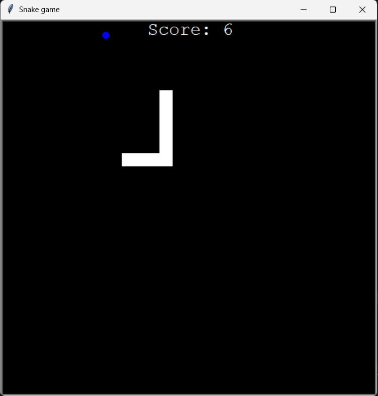
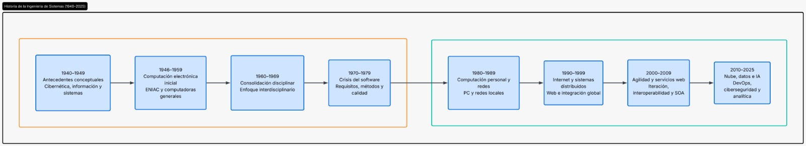
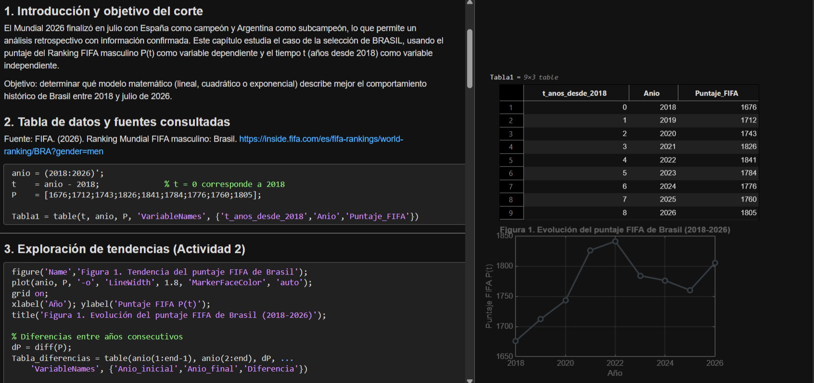

Snake Game
Juego clásico de Snake desarrollado en Python mediante el módulo nativo Turtle, aplicando principios de programación orientada a objetos (POO).
Python Turtle POO
Línea de tiempo: Ingeniería de Sistemas
Línea de tiempo de la historia de la ingeniería de sistemas, desde los antecedentes conceptuales de 1940 hasta la nube, los datos y la IA en 2025.

Cálculo diferencial
Este proyecto analiza la evolución histórica del puntaje FIFA de la selección de Brasil entre 2018 y 2026 mediante MATLAB. A partir de datos reales, se exploran las tendencias del puntaje y sus variaciones anuales. El objetivo es determinar qué modelo matemático (lineal, cuadrático o exponencial) representa mejor el comportamiento de los datos.
MATLAB Modelado matemático